후원이 들어올 때마다 방송 중인 사람이 알림을 보고 장면을 바꾸고, 조명과 연출을 손으로 틀어야 했습니다. 방송을 하면서 동시에 하기에는 놓치는 순간이 많았습니다.
만든 것
팬더TV, SOOP, 투네이션, 위플랩, 펀네이션 후원 알림을 감지해 후원 개수에 맞춘 OBS 장면 전환, Resolume LED 칼럼, 조명과 카메라, 배경음악 음소거를 실행합니다. 연출은 음원에 맞춰 놓는 시간축 편집기(Timeline)로 직접 짭니다.
결과
버튼을 누르지 않아도 후원이 들어오는 순간 연출이 실행되고 스스로 원래 장면으로 돌아옵니다. 처음 설치한 사람도 준비 단계 화면만 따라 하면 방송을 시작할 수 있습니다.
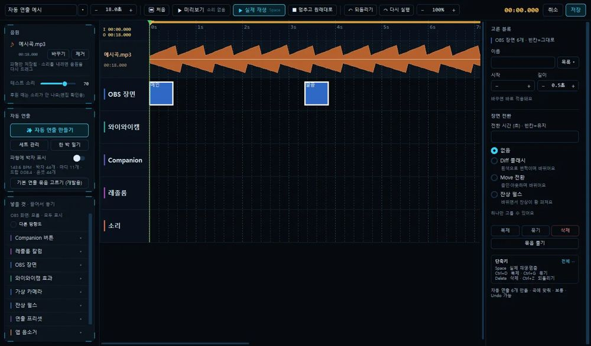
Timeline 편집기. 음원 파형 아래 OBS 장면, 와이와이캠, Companion, 레졸룸, 소리 트랙과 자동으로 놓인 장면 블록. 예시 음원
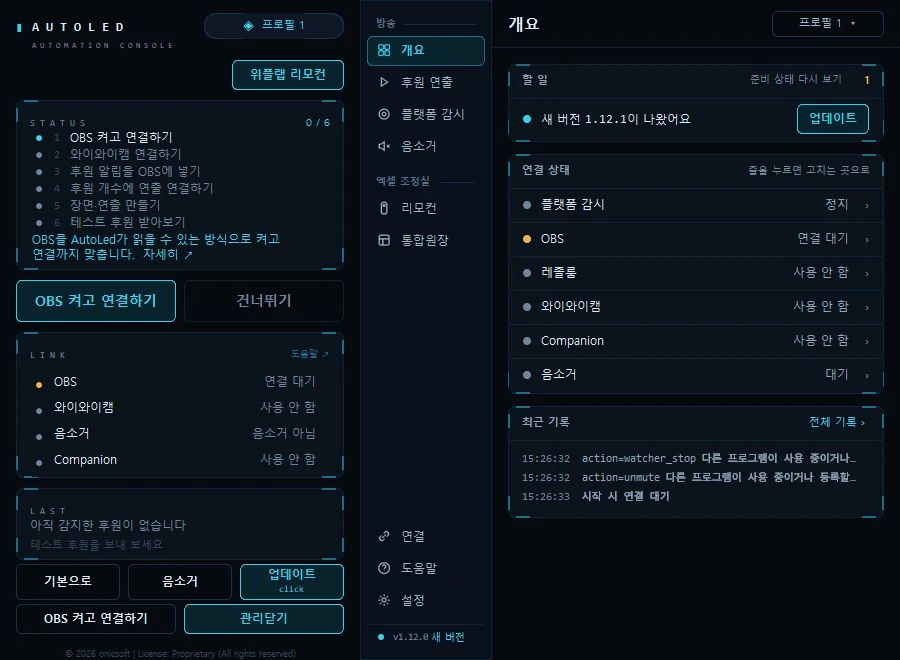
관리센터 개요. 준비 단계와 장비별 연결 상태
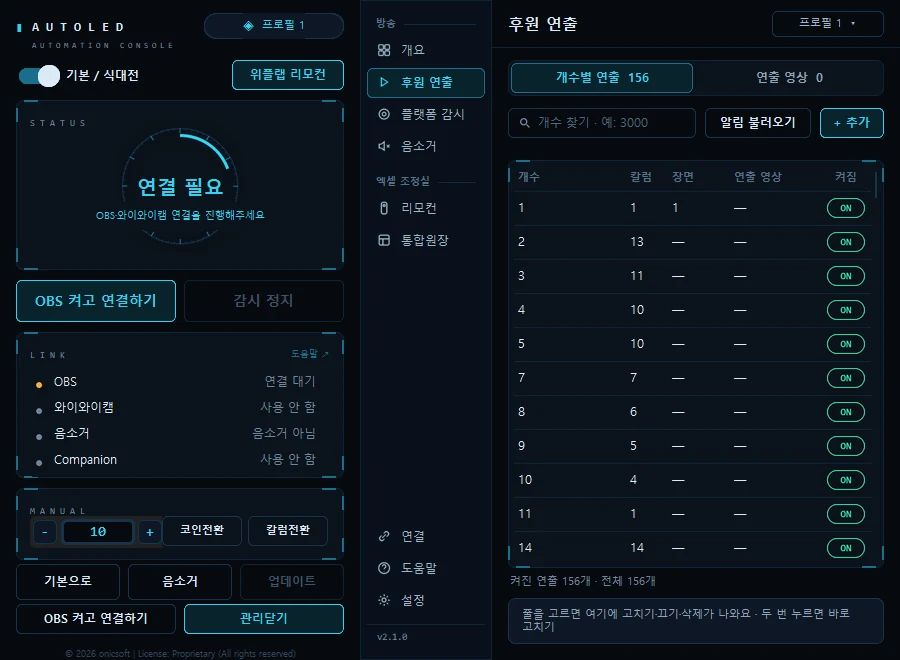
후원 연출 표. 후원 개수마다 실행할 칼럼과 장면. 예시 매핑
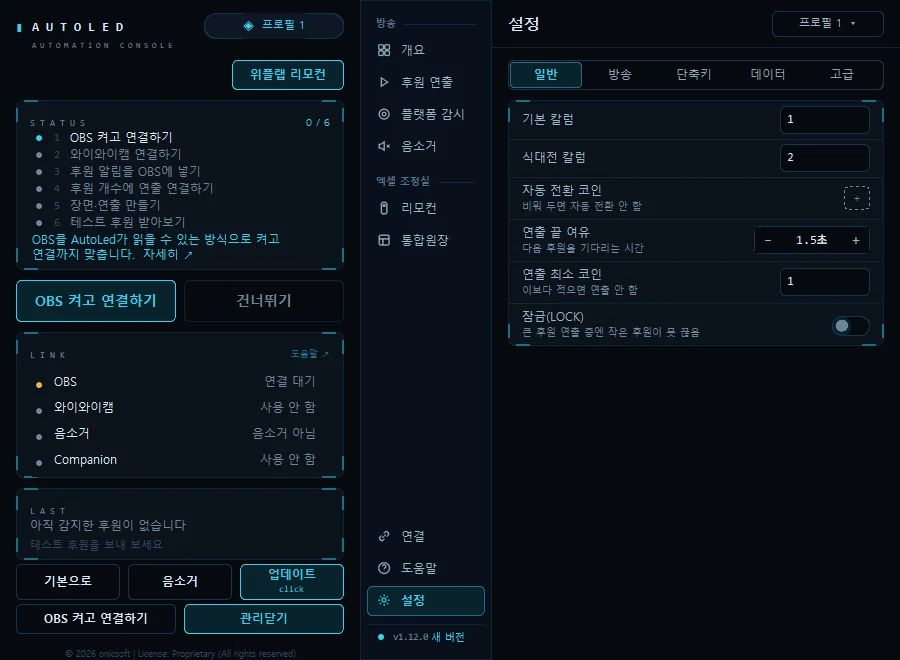
설정. 연출 끝 여유, 최소 코인, 잠금 같은 방송 규칙
앱 안에서 새 버전을 알리고 바로 업데이트합니다. 업데이트 정보에는 서명과 SHA-256 체크섬을 붙입니다.
계정과 이용 기간은 직접 만든 로그인 서버가 확인합니다.
소스를 기계어로 컴파일(Nuitka)하고 설치 파일(Inno Setup)로 배포합니다.
영상
AutoLed 홍보영상 | 후원이 들어오면, 방송이 알아서 — youtu.be/yISU4NWuGQY
BJ 방송 자동화 프로그램, 1년 손님 한 곳에서 BJ 10명까지 — youtu.be/OynwWtQM3Lg
상세 페이지 — chokyusong.github.io/work/autoled.html
제품 페이지 — onicsoft.co.kr/autoled.html
설치 파일 저장소 — github.com/Chokyusong/AutoLed-Releases
소스 코드와 후원 감지 방식은 공개하지 않습니다. 공개 저장소에는 설치 파일만 둡니다. 화면은 예시 데이터로 띄워 찍었습니다.
02 / 11손님 홈페이지 · 제작 중
ASTRA 엔터테인먼트 홈페이지
크리에이터 매니지먼트, 개인방송, 브랜드·미디어 제작을 하는 엔터테인먼트 회사의 홈페이지 8쪽을 움직이는 시안으로 만들었습니다. 아래 창은 그림이 아니라 실제 시안이라 직접 스크롤하고 눌러 볼 수 있습니다.
맡은 일
기획 · 디자인 · 프런트엔드 · 모션 (1인)
시작
2026년 11월
상태
움직이는 시안 확인 단계
기술
HTML, CSS, JavaScript · 실제 사이트는 Next.js와 PHP 백엔드
기록
커밋 280
손님
엔터테인먼트 회사
의뢰
크리에이터 매니지먼트, 개인방송, 브랜드·미디어 제작을 하는 엔터테인먼트 회사의 홈페이지입니다. 손님이 보낸 PPT 초안 8장에서 출발했습니다.
만든 것
홈, 회사소개, MCN, 브랜드, 엔터테인먼트, 미디어, 협력사, CONTACT 8쪽입니다. 홈은 ASTRA 글자와 WE MAKE NEXT를 코드로 움직이는 그림 배경 위에 띄우고, MCN 첫 화면은 사무실 사진 한 장에 깊이를 넣어 카메라가 둘러보듯 움직입니다. 쪽마다 스크롤에 맞춰 장면이 바뀌고, 휴대폰 화면도 따로 맞췄습니다.
진행
와이어프레임, 디자인 시안, 움직이는 시안 순서로 확인받으며 만들고 있습니다. 실제 사이트는 Next.js로 만든 화면과 전용 PHP 백엔드(관리자, 블로그, 지원 양식, 메일, 통계)를 웹호스팅에 올리는 방식이고, 이 과정을 다음 손님에게도 쓸 수 있게 공통 부품과 검사 도구로 함께 정리하고 있습니다.
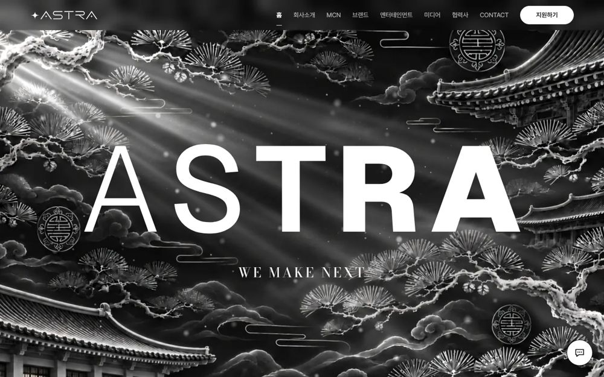
홈. 흑백 그림 배경 위에 ASTRA 글자가 떠오릅니다.
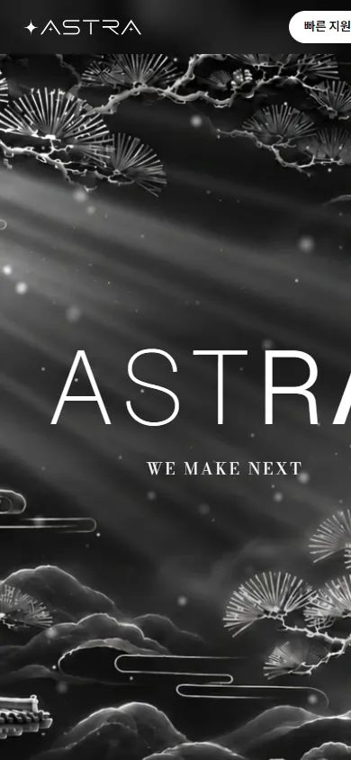
홈 휴대폰 화면.
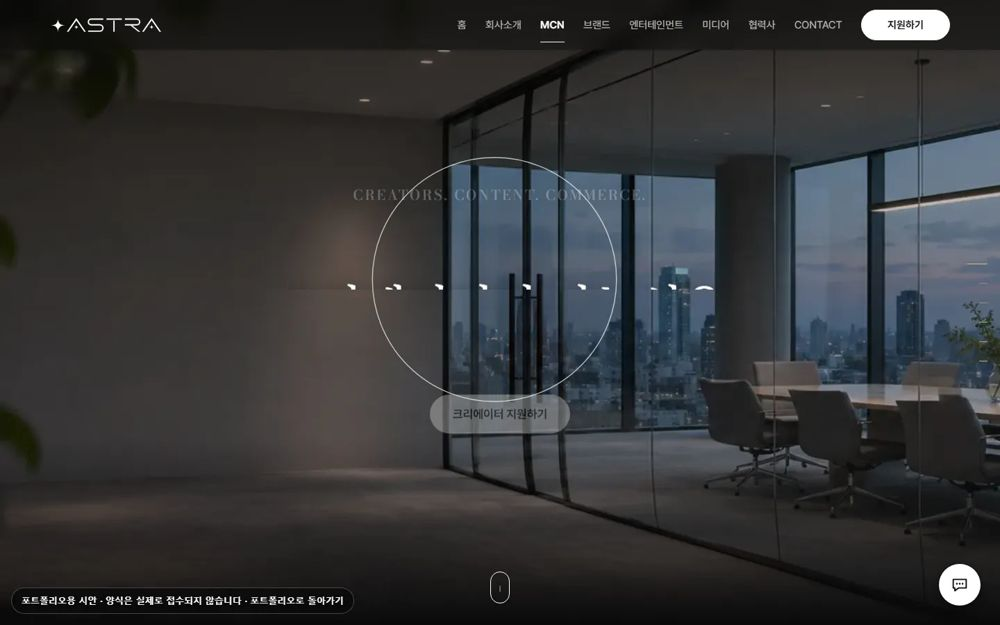
MCN. 사무실 사진 한 장에 깊이를 넣어 카메라가 둘러보듯 움직입니다.브랜드. 큰 글자와 모델 사진, 흐르는 분야 이름.
PPT 초안 → 와이어프레임 → 디자인 시안 → 움직이는 시안 → 실제 사이트
상세 페이지 — chokyusong.github.io/work/astra.html
시안 새 창으로 열기 — ../works/astra/motion/home.html
2026년 11월 11일 시안 판입니다. 지원·문의 양식은 화면만 있고 실제로 접수되지 않습니다. 배경 그림 일부는 AI로 만들었습니다.
03 / 11방송 관제 프로그램 · 비공개 저장소
CCTV · BJ 방송 통합 관제
소속 BJ 최대 60명의 방송을 한 화면에서 지켜보고, 챙겨야 할 일은 텔레그램으로 알려 주는 관제 프로그램입니다.
맡은 일
기획 · 개발 · 배포 (1인)
시작
2026년 10월
형태
PC 설치형 · 서버형
기술
Python, Windows, Telegram, SQLite
문제
매니저가 BJ 방을 하나씩 돌며 방송을 확인했습니다. 언제 켜고 몇 시간 했는지는 BJ 말에 기대야 했고, 큰 후원이나 채팅 끊김은 다음 날에야 알았습니다.
만든 것
등록한 BJ의 방송 시작과 종료를 약 1분마다 확인해, 방송 중인 방을 타일로 동시에 보여 주고 채팅을 함께 띄웁니다. 방송마다 하트, 채팅 참여, 매일 10시 순위를 기록하고 정해 둔 상황은 텔레그램으로 알립니다.
결과
매니저 한 명이 여러 BJ를 한 화면과 휴대폰 알림으로 챙깁니다. 방송 기록이 쌓여 면담 때 바로 꺼내 봅니다.
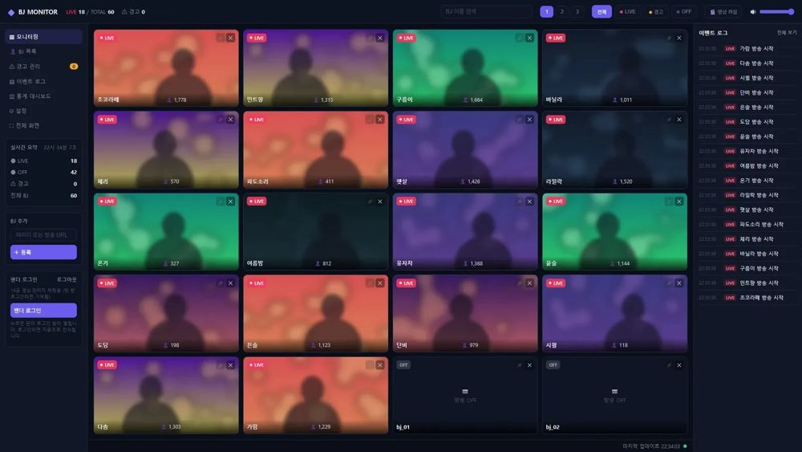
CCTV 관제 화면. 방송 중인 BJ 영상 타일과 오른쪽 이벤트 기록. 예시 데이터
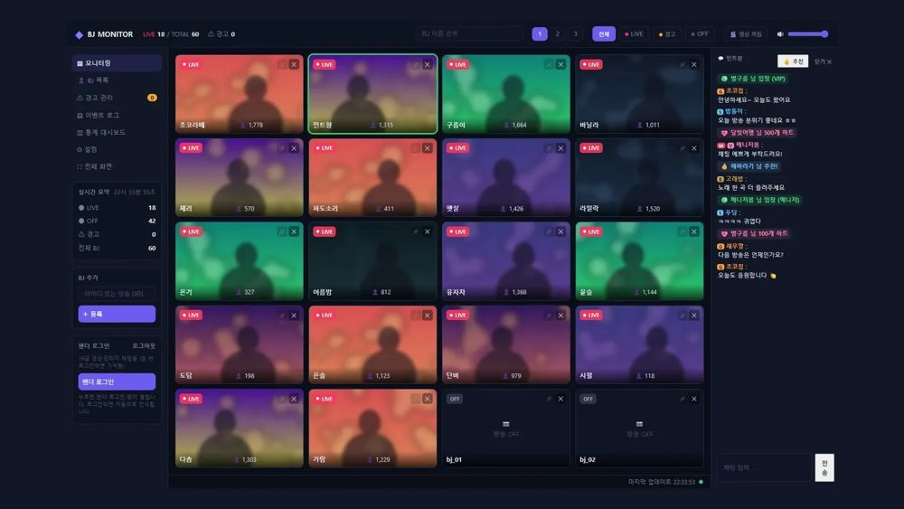
타일을 누르면 그 방 채팅이 열립니다. 등급, 매니저, 하트, 입장을 색으로 구분합니다.
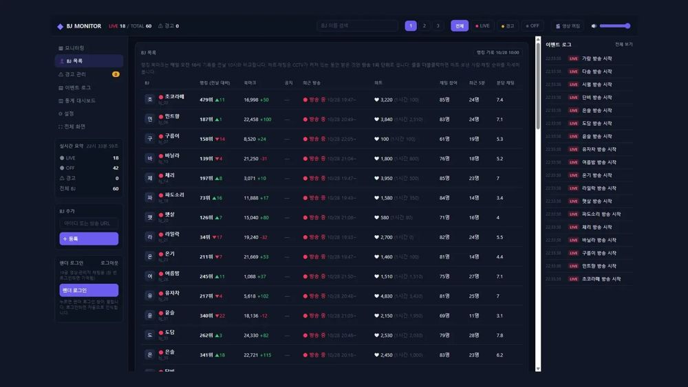
BJ 목록. 매일 10시 순위를 전날과 비교하고, 방송마다 하트와 채팅 참여가 쌓입니다.
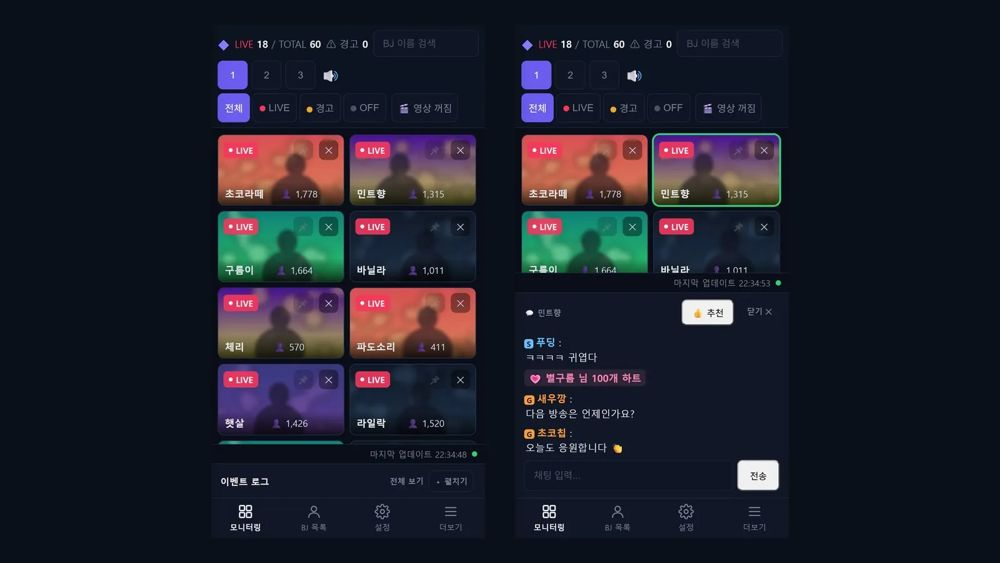
서버형을 휴대폰으로 열면 앱 모양 화면. 아래 탭으로 모니터링, BJ 목록, 설정을 넘깁니다.
등록만 하면 이어서: 운영자는 BJ 아이디나 방송 주소만 등록합니다. 방송이 켜지면 그 BJ가 LIVE로 바뀌어 위로 올라오고 영상과 채팅이 이어집니다.
한 화면에서 60명: 방송 중인 방을 타일로 동시에 보여 주고, 타일을 누르면 크게 보기와 소리, 그 방 채팅이 열립니다. 채팅은 등급, 매니저, 후원, 입장을 색으로 구분합니다.
방송마다 쌓이는 기록: 최근 방송의 시작·종료 시각, 하트 합계, 채팅 참여자 수가 방송마다 저절로 쌓입니다. 매일 오전 10시 순위를 기록해 전날과 비교합니다.
상세 페이지 — chokyusong.github.io/work/cctv.html
플랫폼 연결 방식과 소스 코드는 공개하지 않습니다. 화면은 예시 데이터입니다.
04 / 11업무 자동화 · 비공개 저장소
BJ 엔터 주간 정산
엑셀 시트 여러 장으로 하던 주간 정산을, 자료 수집부터 계산까지 프로그램이 맡고 담당자는 예외만 확인해 확정하도록 바꿨습니다.
맡은 일
기획 · 개발 · 배포 (1인)
시작
2026년 10월
기술
Python, PySide6, SQLite, Nuitka
기록
커밋 28 · 자동 테스트 141
문제
매주 BJ 정산을 엑셀 시트 여러 장과 수식으로 했습니다. 개인방송과 경쟁방마다 나누는 방식이 달랐고, 수식이 틀리거나 자료가 빠져도 확정 전에 알아채기 어려웠습니다.
만든 것
사무실 PC에 설치하는 Windows 프로그램입니다. 정해진 요일에 관리자 화면의 자료를 가져와 BJ와 맞추고, 개인방송, 경쟁방, 회사 수익, 지분 분배까지 계산합니다.
원칙
모르는 조건은 0원으로 채우지 않고 그 줄만 보류합니다. 원본 합계와 계산 금액이 원 단위까지 맞아야 확정 버튼이 열립니다. 확정한 주는 다시 계산되지 않습니다.
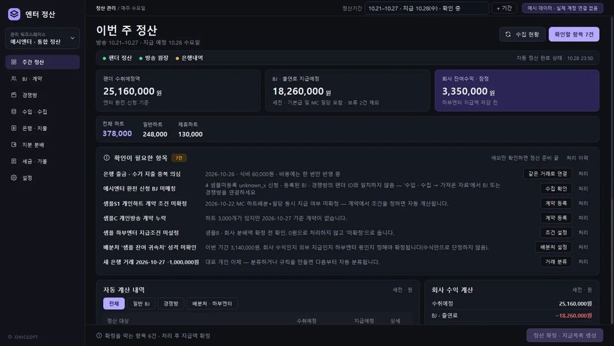
이번 주 받을 돈, 줄 돈, 회사 몫 카드와 확인이 필요한 항목 목록. 예시 데이터
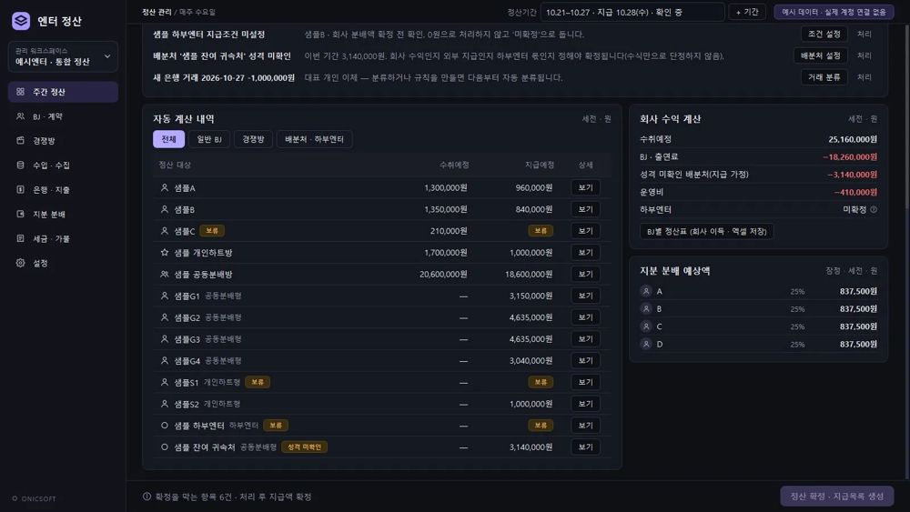
받는 사람별 자동 계산 내역. 조건이 정해지지 않은 줄은 0원이 아니라 '보류'로 남습니다.
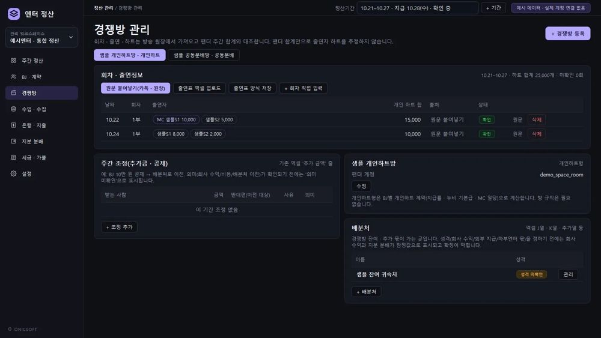
경쟁방은 회차, 출연자, 하트를 경쟁방 장부에서 정해 둔 방식대로 나눕니다.
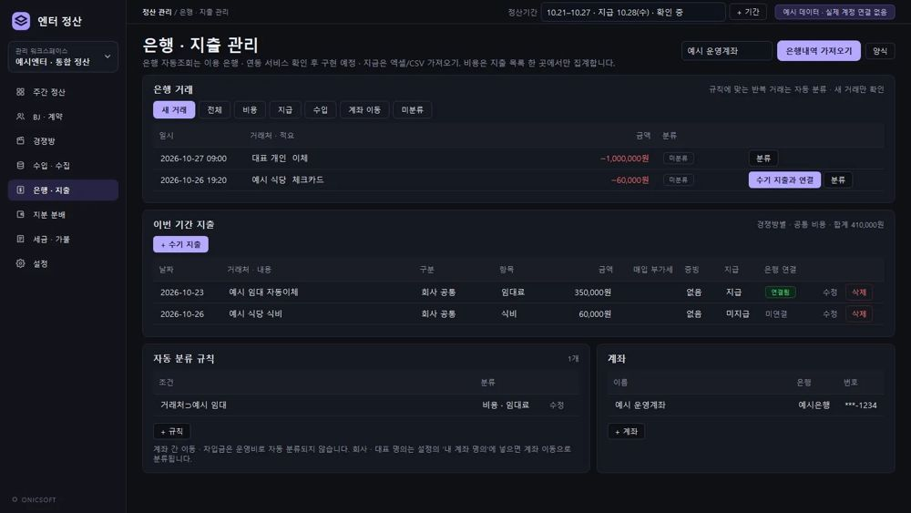
은행 거래내역을 불러와 지급과 맞춥니다. 반복 거래는 규칙으로 자동 분류합니다.
자료 수집 → 원본 합계 대조 → 자동 정산 → 예외 확인 → 정산 확정 → 지급목록
모르면 0원으로 채우지 않는다: 등록되지 않은 BJ, 계약이 없는 BJ, 조건이 정해지지 않은 계산은 그 줄만 보류합니다. 무엇을 하면 되는지 버튼과 함께 띄우고, 조건이 정해지면 보류한 줄만 다시 계산합니다.
숫자를 두 번 맞춘다: 원본에 나온 합계와 프로그램이 계산한 금액이 다르면 확정 버튼이 막히고 어느 줄이 다른지 보여 줍니다. 같은 자료를 다시 넣어도 두 번 계산되지 않습니다.
상세 페이지 — chokyusong.github.io/work/enter-payroll.html
정산 계산 규칙과 고객 정보는 공개하지 않습니다. 업체 이름과 화면 속 사람, 금액은 모두 가상입니다.
05 / 11고객 맞춤 제작 · 업무 자동화
납품 거래장부
엑셀 장부에 두 번씩 적던 납품과 입금을, 한 번 적으면 받을 돈까지 계산되는 Windows 프로그램으로 바꿨습니다. 엑셀을 먼저 고치고, 그래도 남는 문제 때문에 프로그램으로 옮겼습니다.
맡은 일
분석 · 엑셀 자동화 · 프로그램 개발 (1인)
시작
2026년 9월
기술
Python, SQLite, Excel 연동, Windows
확인
자동 테스트 14 · 화면 테스트 15 · 엑셀 왕복 4
자동화 전
마트 전단, POP, 현수막을 납품하는 업체가 같은 거래를 엑셀 총원장과 거래처 시트에 두 번씩 적고, 월말에는 두 합계의 차액을 손으로 맞췄습니다. 입금내역을 붙여넣을 때마다 수식이 깨지곤 했습니다.
1단계 · 엑셀
먼저 엑셀을 고쳤습니다. 총원장 한 곳에만 적으면 거래처 시트와 현황판이 수식으로 채워지게 했고, 차액이 0이면 정상이라고 알려 주는 검증 칸도 넣었습니다.
남은 문제
행을 붙여넣거나 칸에 직접 쓰면 수식이 지워졌습니다. 그래서 수식이 아예 없는 프로그램으로 옮겼습니다.
2단계 · 프로그램
메뉴는 '납품 적기', '입금 적기'처럼 할 일 이름입니다. 통장 내역을 붙여넣으면 입금자 이름으로 거래처를 찾아 주고 이미 적은 입금은 뺍니다. 엑셀로 저장하면 예전 장부 모양 그대로 나옵니다.
드러난 불일치
옮기면서 원본 장부끼리 맞지 않는 줄이 드러났습니다. 임의로 고치지 않고 목록으로 정리해 고객에게 확인받았습니다.
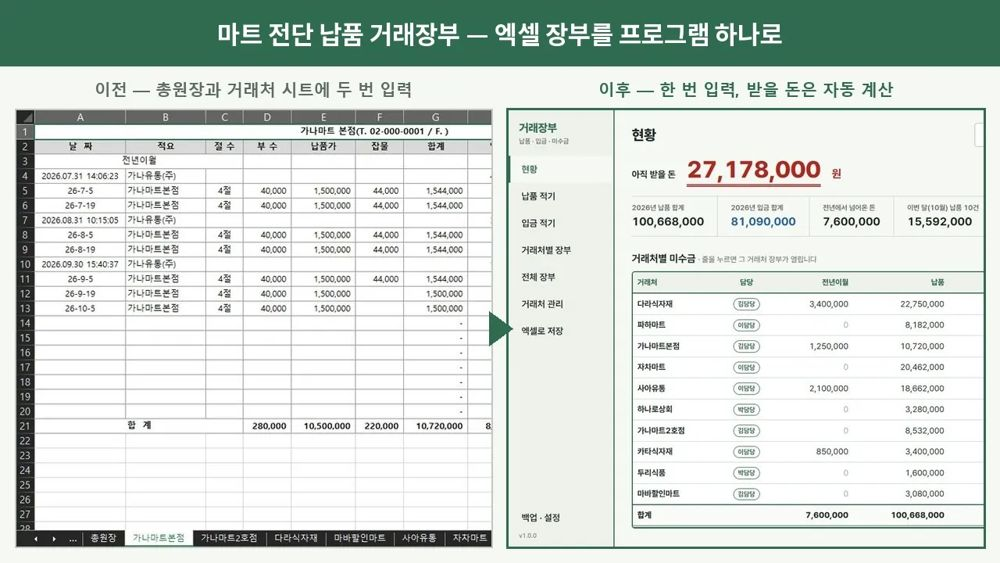
엑셀 장부와 거래장부 프로그램을 나란히 놓은 비교 화면. 예시 데이터
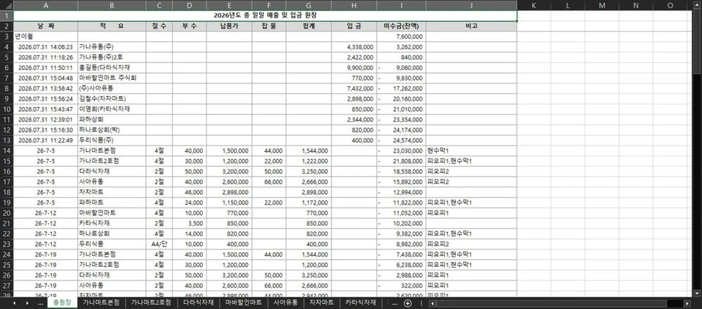
자동화 전 화면
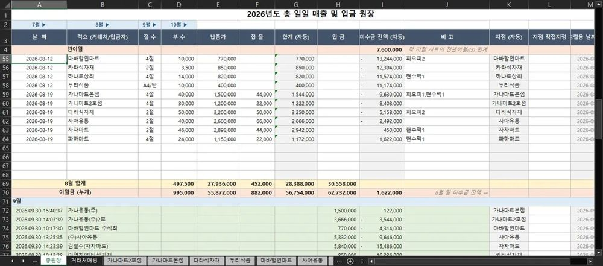
엑셀 자동화 뒤 화면
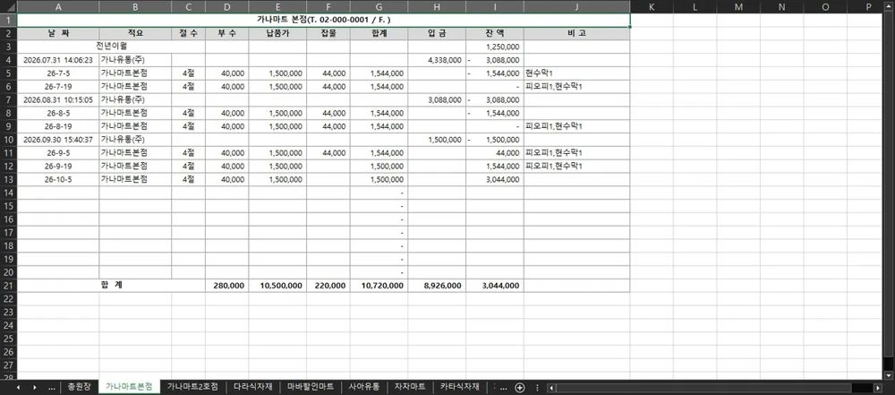
같은 거래를 거래처 시트에 한 번 더 적던 모습. 예시 데이터로 재현.
상세 페이지 — chokyusong.github.io/work/ledger.html
구축 사례 전체 보기 — onicsoft.co.kr/work.html?slug=mart-flyer-ledger
고객 이름과 실제 장부 숫자는 공개하지 않습니다. 화면 속 업체와 금액은 모두 예시입니다.
06 / 11서버 · 운영 · 비공개 저장소
로그인 · 라이선스 서버
AutoLed와 다른 프로그램이 함께 쓰는 계정과 이용 기간을 확인하는 서버와 관리자 화면입니다. 입금 확인과 기간 연장, 홈페이지 블로그까지 이 서버가 맡습니다.
맡은 일
기획 · 개발 · 운영 (1인)
시작
2026년 8월
기술
Python, FastAPI, SQLite, Nginx, systemd
기록
커밋 286
목적
AutoLed를 판매하려면 계정과 이용 기간을 관리하고, 앱이 켜질 때마다 확인할 서버가 필요했습니다.
만든 것
앱 로그인과 이용권 검증을 하는 서버와 관리자 화면입니다. 은행 입금 알림을 읽어 이용 기간을 자동으로 늘리고, 새 프로그램은 서버 코드를 고치지 않고 관리자 화면에서 등록해 같은 로그인을 씁니다.
함께 맡는 일
홈페이지 블로그와 구축 사례를 올리는 작은 CMS, 방문 통계도 이 서버가 맡습니다.
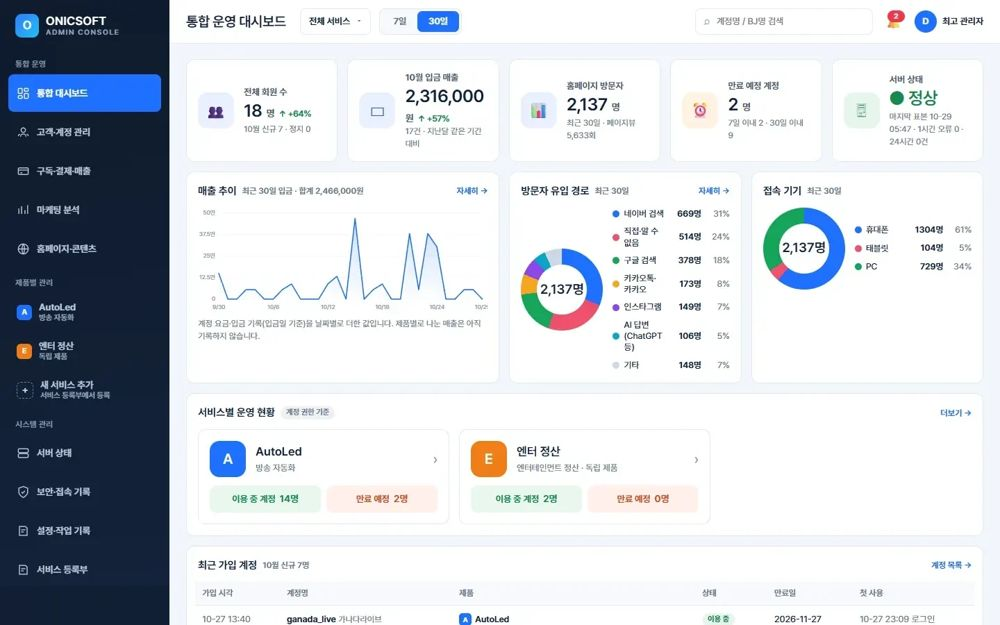
관리자 첫 화면. 회원, 입금, 방문, 서버 상태를 한 화면에서 봄. 예시 자료
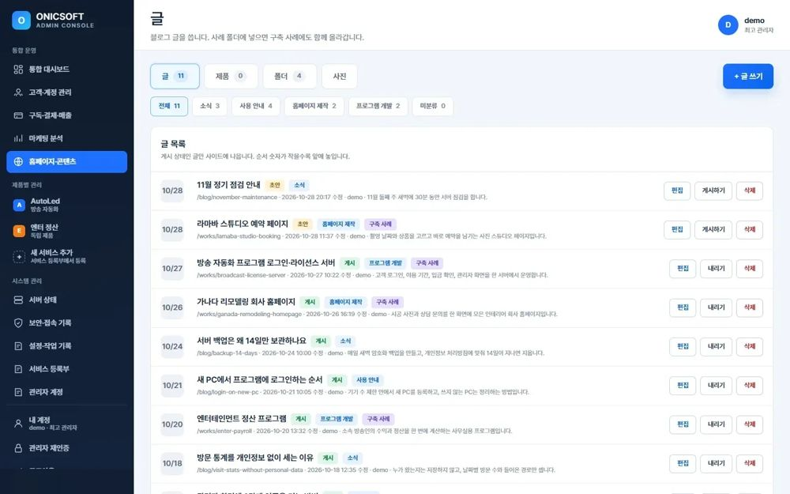
블로그 글 목록. 블로그 글과 구축 사례를 여기서 올리고 고칩니다.
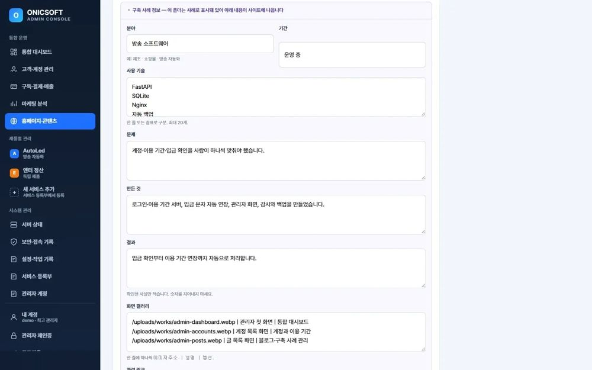
구축 사례 편집. 문제, 만든 것, 결과 칸을 채우면 사이트에 그대로 나옵니다.
데스크톱 앱: AutoLed 등 프로그램이 켜질 때 로그인과 이용권을 확인
입금 알림: 입금이 확인되면 이용 기간을 자동으로 연장
관리자 화면: 회원, 입금, 글, 서버 상태를 한곳에서 관리
상세 페이지 — chokyusong.github.io/work/login-server.html